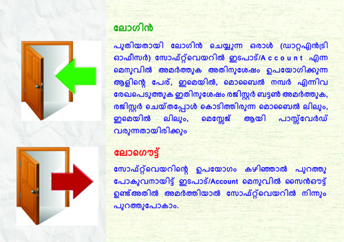

<div>
        <!-- <h3> ലോഗിന്‍  / ലോഗൌട്ട്</h3>
        <p>
        പുതിയതായി ലോഗിന്‍ ചെയ്യുന്ന ഒരാള്‍ (ഡാറ്റഎന്‍ട്രി ഓഫീസര്‍) സോഫ്റ്റ്‌വെയറില്‍ ഇടപാട്/Account എന്ന മെനുവില്‍ അമര്‍ത്തുക അതിനുശേഷം ഉപയോഗിക്കുന്ന ആളിന്‍റെ പേര്,ഇമെയില്‍, മൊബൈല്‍ നമ്പര്‍ എന്നിവ രേഖപെടുത്തുക ഇതിനുശേഷം രജിസ്റ്റര്‍ ബട്ടണ്‍ അമര്‍ത്തുക, രജിസ്റ്റര്‍ ചെയ്തപ്പോള്‍ കൊടിത്തിരുന്ന മൊബൈല്‍ ലിലും, ഇമെയില്‍ ലിലും, മെസ്സേജ് ആയി പാസ്സ്‌വേര്‍ഡ്‌ വരുനനതായിരിക്കും
        
        </p>
        
        <p>
        സോഫ്റ്റ്‌വെയറിന്‍റെ ഉപയോഗം കഴിഞ്ഞാല്‍ പുറത്തുപോകുവനായിട്ട് ഇടപാട്/Accountമെനുവില്‍ സൈന്‍ഔട്ട്‌ ഉണ്ട്അതില്‍ അമര്‍ത്തിയാല്‍ സോഫ്റ്റ്‌വെയറില്‍നിന്ന് പുറത്തുപോകാം. അതിനു ശേഷം പുറത്തുപോയെന്നുള്ള കുറിപ്പ് (Message) വരും 
        
        </p> -->
        <div align="center">
                        
                        </div>        
        
        </div>